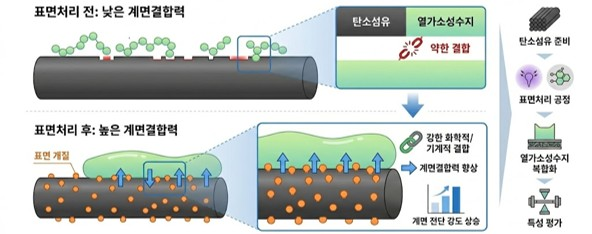
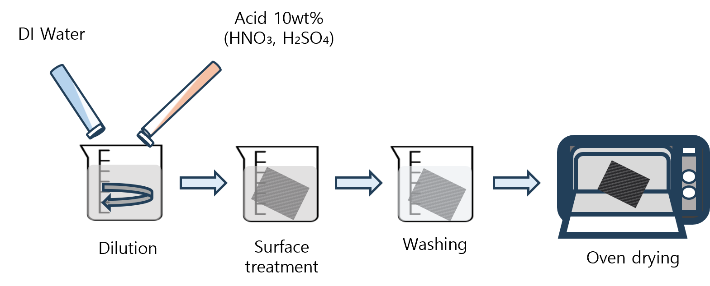
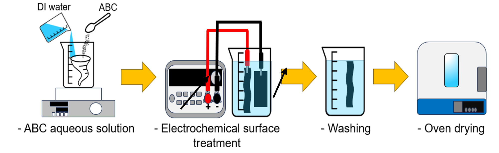
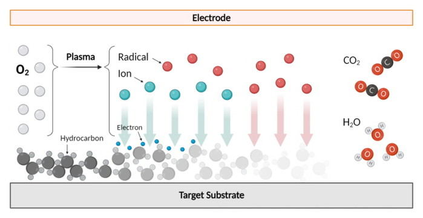

FCML

탄소섬유 표면 개질: 처리 전후 계면 상호작용 변화와 CFRP 복합재 성능 강화 메커니즘
미처리 탄소섬유: 매끄럽고 비극성 표면.
표면 처리: 작용기 도입 및 거칠기 증가(플라즈마, 산, 전기화학).
계면 결합: 에폭시와 공유 결합 형성으로 습윤성·접착력 향상
Carbon Fiber Surface Modification: Changes in Interfacial Interactions Before and After
Treatment and the Mechanism for Enhanced Performance of CFRP Composites
Untreated Carbon Fiber: Smooth, Non-polar Surface
Surface Treatment: Introducing Functional Groups and Increasing Roughness (Plasma, Acid, Electrochemical)
Interfacial Bonding: Forming Covalent Bonds with Epoxy to Enhance Wetting and Adhesion

산처리 모식도(Schematic diagram of acid treatment)
탄소섬유 산처리는 산 용액을 제조하여, 섬유를 침지처리하고 DI Water로 세척 후 오븐에서 건조하는 공정으로, 표면에 산소 작용기(-OH, -COOH)를 도입하고 표면거칠기를 증가시켜 친수성을 높입니다. 이로 인해 에폭시 수지와의 화학적 공유결합과 기계적 앵커링 효과가 강화되어 CFRP 복합재의 인터페이스 전단강도(ILSS)와 인성을 크게 향상시킬 수 있습니다.
Carbon fiber acid treatment involves preparing an acid solution, immersing the fibers, washing with DI water, and drying in an oven, which introduces oxygen functional groups (-OH, -COOH) on the surface and increases surface roughness to enhance hydrophilicity. This strengthens chemical covalent bonding and mechanical anchoring effects with the epoxy resin, significantly improving the interlaminar shear strength (ILSS) and toughness of CFRP composites.

전기화학적 표면처리 모식도(Schematic diagram of electrochemical surface treatment)
전기화학적 표면처리는 탄소섬유를 양극으로 한 전해조에서 전류밀도를 인가하며, 전해질 용액에 침지하는 방식으로 진행합니다. 전압과 시간을 제어하여 섬유표면을 선택적으로 산화합니다. 이 과정에서 물 분해와 산화 반응으로 C-OH, C=O, COOH 등 산소, 질소 작용기 등이 도입되고 거칠기가 증가합니다. 이로인해, 수지와의 공유 결합 강화와 기계적 인터로킹으로 계면 접착력이 향상되어 CFRP 복합재에서 인터페이스 전단 강도(ILSS)가 크게 증가하고, 층간 박리(delamination) 저항성 및 전체 인장·압축 강도·인성이 개선되며, 피로 수명 연장과 충격 흡수 능력이 우수해 항공·자동차 분야 고성능 구조재로 적합합니다.
Electrochemical surface treatment involves applying a current density to an electrolytic cell with carbon fibers as the anode, immersing the fibers in an electrolyte solution. By controlling voltage and time, the fiber surface is selectively oxidized. During this process, water decomposition and oxidation reactions introduce oxygen and nitrogen functional groups, such as C-OH, C=O, and COOH, increasing the roughness. This enhances covalent bonding with the resin and mechanical interlocking, resulting in improved interfacial adhesion, significantly increasing the interfacial shear strength (ILSS) of CFRP composites. This improves delamination resistance, overall tensile and compressive strength, and toughness. Furthermore, it extends fatigue life and offers superior shock absorption, making it suitable for high-performance structural materials in the aerospace and automotive industries.

플라즈마 처리 모식도(Schematic diagram of plasma treatment)
플라즈마 표면 처리는 RF(13.56 MHz) 또는 마이크로웨이브 플라즈마 발생기로 O₂, N₂, Ar 등의 가스를 저압(0.1-1 Torr) 또는 대기압에서 방전시켜 활성 종(이온, 라디칼, 전자)을 생성하고 탄소섬유를 10-300초 노출시키는 비접촉 공정으로, 진공형(저압)과 대기압형(APPT)으로 나뉩니다. 처리 중 그래파이트 층 선택적 에칭(amorphous 탄소 우선 제거)과 산화 반응으로 C-OH, C=O, COOH, C-N 등의 작용기가 도입되며, 나노스케일 거칠기가 형성됩니다. 표면 처리 후에는 표면 오염제거와 극성 증가로 O/C 및 N/C 비율이 상승하고, 수지와의 접촉각이 감소하며 표면 에칭(Etching)으로 기계적 인터로킹이 강화됩니다. 이로 인해 접착력이 향상되어 복합재에서 인성-충격 강도가 증가합니다. 산업 대량 처리에 적합합니다.
Plasma surface treatment is a non-contact process that uses an RF (13.56 MHz) or microwave plasma generator to discharge gases such as O₂, N₂, and Ar at low pressure (0.1-1 Torr) or atmospheric pressure to generate reactive species (ions, radicals, and electrons) and expose carbon fibers for 10-300 seconds. It is divided into vacuum (low pressure) and atmospheric (APPT) processes. During the treatment, the graphite layer is selectively etched (amorphous carbon is preferentially removed) and oxidation reactions introduce functional groups such as C-OH, C=O, COOH, and C-N, creating nanoscale roughness. After surface treatment, surface contamination is removed and polarity is increased, increasing the O/C and N/C ratios. The contact angle with the resin is reduced, and surface etching enhances mechanical interlocking. This improves adhesion, increasing the toughness and impact strength of composites. It is suitable for industrial mass processing.
공란
공란
공란
공란